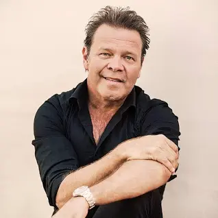

Troy-Casar-Caley

From Wikipedia, the free encyclopedia
Troy Cassar-Daley (born 18 May 1969) is an Australian country music songwriter and entertainer.
Cassar-Daley has released thirteen studio albums, two live albums and five compilation albums over 30 years, including the platinum-selling The Great Country Songbook with Adam Harvey. Throughout this time he has received awards including five ARIA Music Awards, forty Golden Guitars,[1] nine Deadly Awards (Australian Indigenous Artist Awards), four Country Music Association of Australia Entertainer of the Year awards and two National Indigenous Music Awards.[2][3]
Click to Return to Home Page